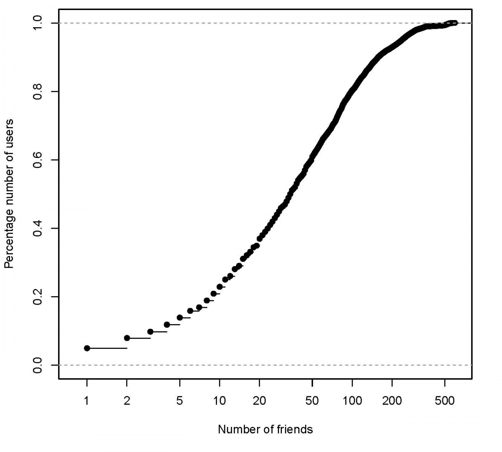
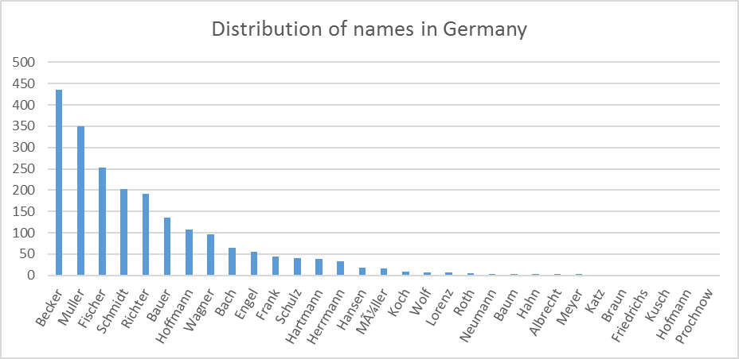
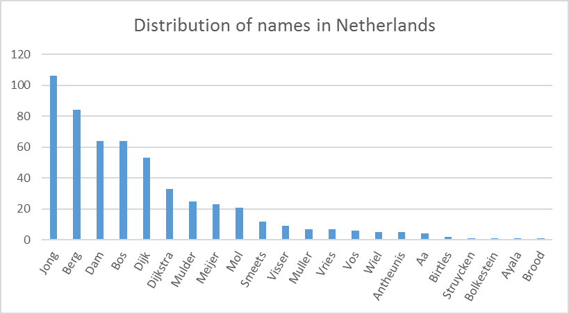
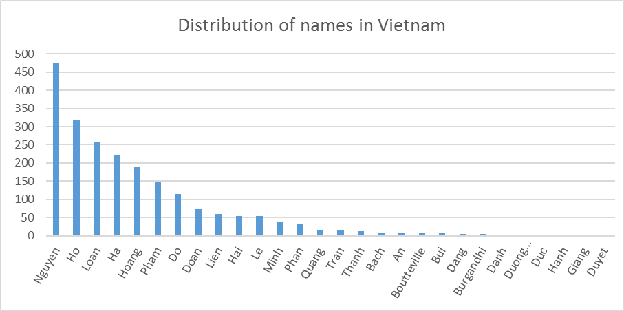
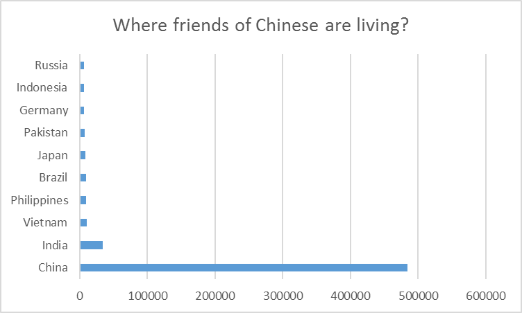
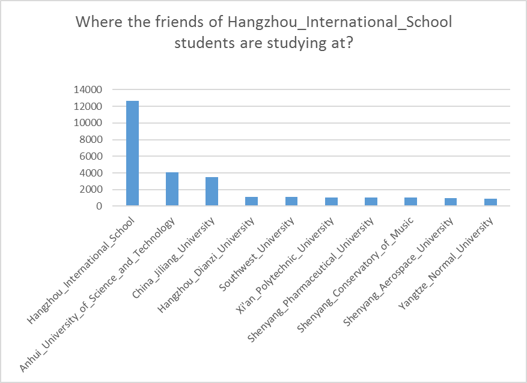

In previous posts (Getting started with snb, DATAGEN: data generation for the Social Network Benchmark), Arnau Prat discussed the main features and characteristics of DATAGEN: realism, scalability, determinism, usability. DATAGEN is the social network data generator used by the three LDBC-SNB workloads, which produces data simulating the activity in a social network site during a period of time. In this post, we conduct a series of experiments that will shed some light on how realistic data produced by DATAGEN looks. For our testing, we generated a dataset of scale factor 10 (i.e., social network of 73K users during 3 years) and loaded it into Virtuoso by following the instructions for generating a SNB dataset and for loading the dataset into Virtuoso. In the following sections, we analyze several aspects of the generated dataset.
A Realistic social graph
One of the most complexly structured graphs that can be found in the data produced by DATAGEN is the friends graph, formed by people and their

Figure 1: Cumulative distribution #friends per user
#R script for generating the social degree distribution
#Input files: person_knows_person_*.csv
library(data.table)
library(igraph)
library(plotrix)
require(bit64)
dflist <- lapply(commandArgs(trailingOnly = TRUE), fread, sep="|",
header=T, select=1:2, colClasses="integer64")
df <- rbindlist(dflist) setNames(df, c("P1", "P2"))
d2 <- df[,length(P2),by=P1]
pdf("socialdegreedist.pdf")
plot(ecdf(d2$V1),main="Cummulative distribution #friends per user",
xlab="Number of friends", ylab="Percentage number of users", log="x",
xlim=c(0.8, max(d2$V1) + 20))
dev.off()
Data Correlations
Data in real life as well as in a real social network is correlated; e.g. names of people living in Germany have a different distribution than those living in Netherlands, people who went to the same university in the same period have a much higher probability to be friends and so on and so forth. In this experiment we will analyze if data produced by DATAGEN also reproduces these phenomena.
Which are the most popular names of a country?
We run the following query on the database built in Virtuoso, which computes the distribution of the names of the people for a given country. In this query, ‘A_country_name’ is the name of a particular country such as ‘Germany’, ‘Netherlands’, or ‘Vietnam’.
SELECT p_lastname, count (p_lastname) as namecnt
FROM person, country
WHERE p_placeid = ctry_city
and ctry_name = 'A_country_name'
GROUP BY p_lastname order by namecnt desc;
As we can see from Figures 2, 3, and 4, the distributions of names in Germany, Netherlands and Vietnam are different. A name that is popular in Germany such as Muller is not popular in the Netherlands, and it even does not appear in the names of people in Vietnam. We note that the names’ distribution may not be exactly the same as the contemporary names’ distribution in these countries, since the names resource files used in DATAGEN are extracted from Dbpedia, which may contain names from different periods of time.

Figure 2. Distribution of names in Germany

Figure 3. Distribution of names in Netherlands

Figure 4. Distribution of names in Vietnam
Where my friends are living?
We run the following query, which computes the locations of the friends of people living in China.
SELECT top 10 fctry.ctry_name, count (*) from person self, person
friend, country pctry, knows, country fctry
WHERE pctry.ctry_name = 'China'
and self.p_placeid = pctry.ctry_city
and k_person1id = self.p_personid and friend.p_personid = k_person2id
and fctry.ctry_city = friend.p_placeid
GROUP BY fctry.ctry_name ORDER BY 2 desc;
As shown in the graph, most of the friends of people living in China are also living in China. The rest comes predominantly from near-by countries such as India, Vietnam.

Figure 5. Locations of friends of people in China
Where my friends are studying?
Finally, we run the following query to find where the friends of people studying at a specific university (e.g., “Hangzhou_International_School”) are studying at.
SELECT top 10 o2.o_name, count(o2.o_name) from knows, person_university
p1, person_university p2, organisation o1, organisation o2
WHERE
p1.pu_organisationid = o1.o_organisationid
and o1.o_name='Hangzhou_International_School'
and k_person1id = p1.pu_personid and p2.pu_personid = k_person2id
and p2.pu_organisationid = o2.o_organisationid
GROUP BY o2.o_name ORDER BY 2 desc;
As we see from Figure 6, most of the friends of the Hangzhou International School students also study at that university. This is a realistic correlation, as people studying at the same university have a much higher probability to be friends. Furthermore, top-10 universities for the friends of the Hangzhou School students’ are from China, while people from foreign universities have small number of friends that study in Hangzhou School (See Table 1).

Figure 6. Top-10 universities where the friends of Hangzhou International School students are studying at.
| Name | # of friends |
|---|---|
| Hangzhou_International_School | 12696 |
| Anhui_University_of_Science_and_Technology | 4071 |
| China_Jiliang_University | 3519 |
| … | |
| Darmstadt_University_of_Applied_Sciences | 1 |
| Calcutta_School_of_Tropical_Medicine | 1 |
| Chettinad_Vidyashram | 1 |
| Women’s_College_Shillong | 1 |
| Universitas_Nasional | 1 |
Table 1. Universities where friends of Hangzhou International School students are studying at.
In a real social network, data is riddled with many more correlations; it is a true data mining task to extract these. Even though DATAGEN may not be able to model all the real life data correlations, it can generate a dataset that reproduce many of those important characteristics found in a real social network, and additionally introduce a series of plausible correlations in it. More and more interesting data correlations may also be found from playing with the SNB generated data.